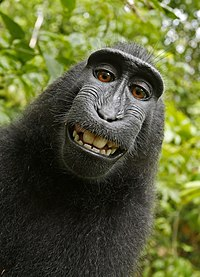
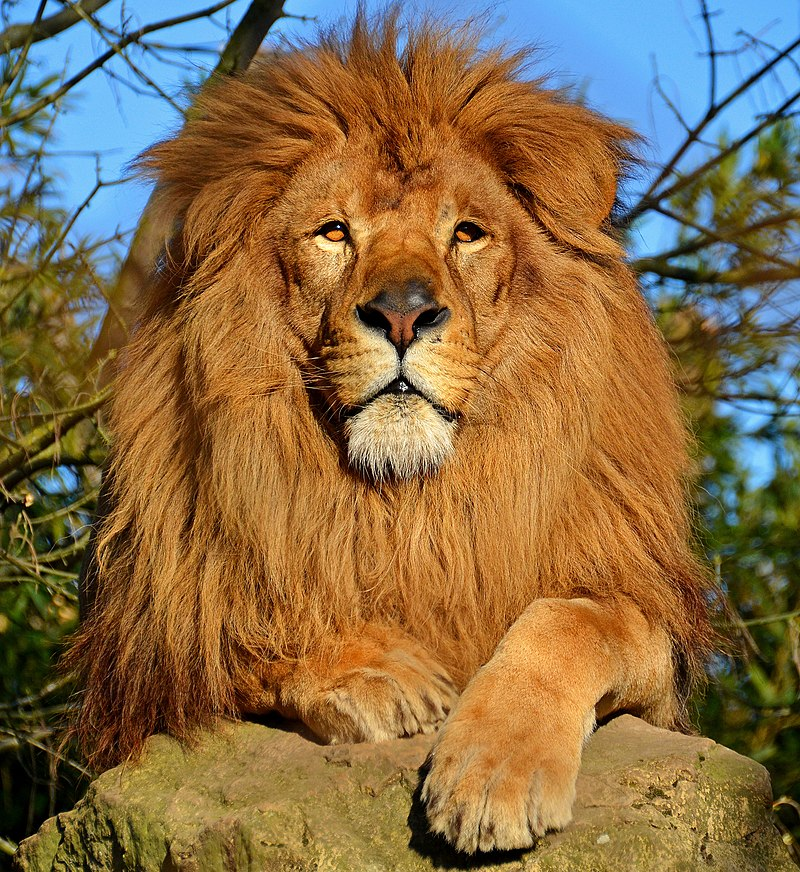
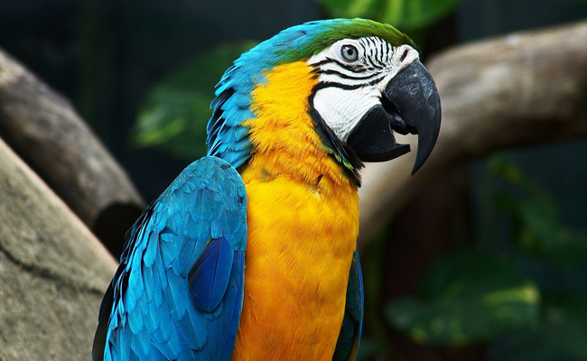
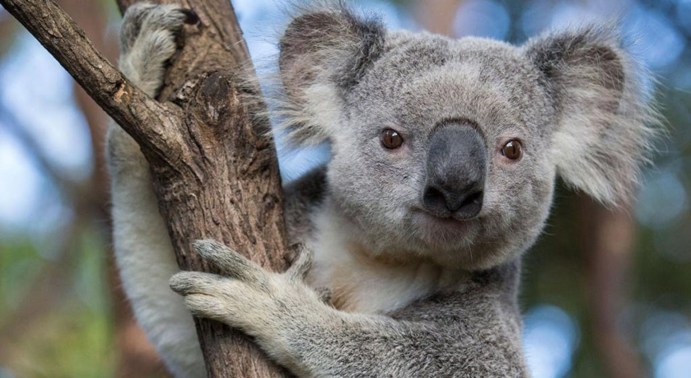

| NOM | Description | Pays Natal | |
|---|---|---|---|
Singe |
Les singes sont des mammifères de l'ordre des primates, généralement arboricoles, à la face souvent glabre et caractérisés par un encéphale développé et de longs membres terminés par des doigts. Bien que leur ressemblance avec l'Homme ait toujours frappé les esprits, la science a mis de nombreux siècles à prouver le lien étroit qui existe entre ceux-ci et l'espèce humaine. | Afrique ou Amerique du Sud. | |
Lion |
Le roi des animaux doit son surnom à un charisme imposant et à une flamboyante crinière qui rappelle le soleil. Le plus grand félin d'Afrique est surtout un puissant et redoutable prédateur dont les techniques d'embuscades et de chasse laissent peu de chance à ses proies. | Viens d'Afrique. | |
Perroquet |
On peut citer notamment le perroquet Gris du Gabon, le perroquet amazone à couronne jaune, le perroquet amazone à nuque jaune, l'Ara bleu, l'Ara hyacinthe. Le perroquet gris du Gabon est sans doute celui qui possède le plus de capacités à reproduire des sons ou des mots. | Viens d'Ameriue du Sud. | |
Koala |
On trouve généralement que le koala ressemble à un petit ours mais il fait partie de la famille des marsupiaux herbivores. L'Australie est le seul pays au monde où vit le koala. Entre 2 000 et 8 000 koalas vivent dans les forêts. Animal nocturne, il se nourrit essentiellement le soir et la nuit. | Viens d'Australie |